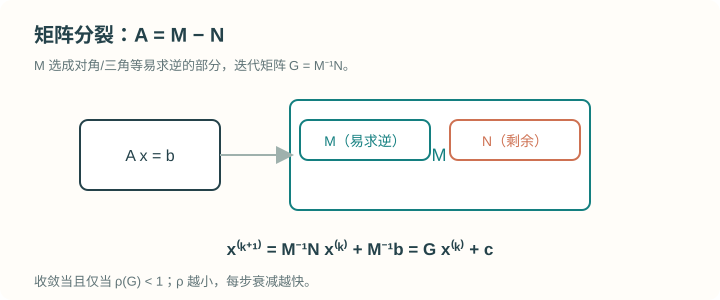
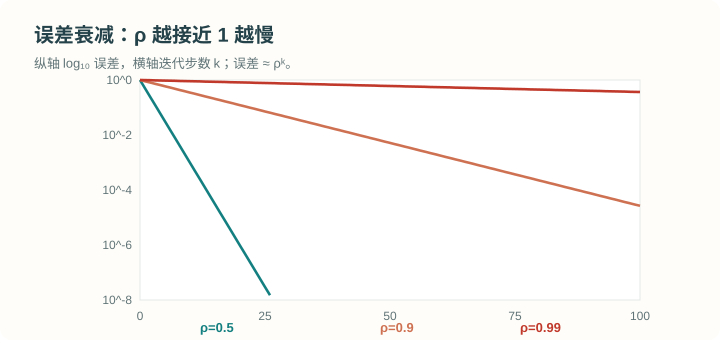

CHAPTER 18 · NUMERICAL ANALYSIS
经典迭代法：Jacobi、Gauss-Seidel 与 SOR
直接法对稠密小矩阵很好用，但面对百万阶稀疏系统时，LU 的内存就放不下了。迭代法换个思路：从一个猜测出发，每步只做廉价的运算，让误差按着一个可预测的速率衰减。本章讲清这个速率由谁决定。
01 · 为什么改用迭代
直接法（LU/Cholesky）的时间是 O(n³)、存储是 O(n²)。当矩阵来自 PDE 离散化、阶数达到百万级且高度稀疏时，仅仅存下 LU 因子就可能耗尽内存——即使矩阵本身只有 O(n) 个非零元，消去产生的填充（fill-in）也会让因子变得很密。
迭代法不分解矩阵，而是从一个初始猜测 x⁽⁰⁾ 出发，每步只做廉价运算（常见为 O(nnz)，nnz 为非零元个数），逐步逼近解。代价是：它不一定收敛，而且即使收敛也可能很慢。选择判断大致是：稠密且规模不大用直接法；超大稀疏系统用迭代法。中间的区间取决于稀疏模式与条件数（教学经验法则，非硬性阈值）。
02 · 矩阵分裂与收敛条件
所有线性迭代法都建立在一个分裂上：把 A 写成“易求逆的 M”减“剩余 N”：
于是 Ax=b 等价于 Mx=Nx+b，自然得出迭代格式：
其中 G=M⁻¹N 是迭代矩阵，c=M⁻¹b。误差 e⁽ᵏ⁾=x⁽ᵏ⁾−x* 满足 e⁽ᵏ⁾=Gᵏe⁽⁰⁾，因此收敛的充要条件是
并且 ρ(G) 越小，每步衰减越快：要把误差降到 ε，迭代次数约为 ln(ε)/ln(ρ(G))。图 1 给出分裂与迭代格式的结构，图 2（第 06 节）则展示不同 ρ 下误差的衰减速度。

M 选成对角或三角等易求逆的部分，迭代矩阵 G=M⁻¹N。收敛与快慢全部由 ρ(G) 决定。03 · Jacobi 迭代
把 A 拆成严格下三角 L、对角 D、严格上三角 U（A=D+L+U）。Jacobi 取 M=D、N=−(L+U)，即只把对角部分拿来求逆。分量更新公式为
右边全部用旧值 x⁽ᵏ⁾，所以所有分量可以完全并行更新，迭代矩阵是 G_J=−D⁻¹(L+U)。
一个容易验证的充分条件是严格对角占优：对每行 |a_ii|>Σ_{j≠i}|a_ij|，则 Jacobi 收敛。它不是必要条件——很多非对角占优的矩阵 Jacobi 也收敛，但此时就要回到 ρ(G_J) 去判断。
04 · Gauss-Seidel 迭代
Gauss-Seidel 取 M=D+L、N=−U。它在计算第 i 个分量时，已经用上本次迭代刚更新的前 i−1 个分量：
迭代矩阵为 G_GS=−(D+L)⁻¹U。用新值的好处是：通常比 Jacobi 快（对一致次序矩阵恰好 ρ(G_GS)=ρ(G_J)²），而且不必额外存一份旧向量；代价是它天然串行，无法像 Jacobi 那样完全并行。
还有一个很重要的充分条件：若 A 对称正定，则 Gauss-Seidel 一定收敛。相比 Jacobi（需要 2D−A 也正定），GS 对 SPD 的要求更宽松。
05 · SOR：松弛参数 ω
SOR（逐次超松弛）把 GS 的新值与旧值做加权平均，引入松弛参数 ω：
ω=1 退化为 Gauss-Seidel；ω<1 为低松弛（用于不稳定情形），ω>1 为超松弛（加速）。对 SPD 矩阵，收敛要求 0<ω<2。对一致次序矩阵（如 Poisson 方程五点差分），存在最优值
其中 ρ(J) 是 Jacobi 迭代矩阵的谱半径。此时 SOR 的谱半径为 ρ(SOR)=ω_opt−1，因此收敛速度可以比 Gauss-Seidel 快很多。比如 Poisson 五点差分在 n=10 时：ρ(J)≈0.9595、ρ(GS)≈0.9206，而 ω_opt≈1.56 把谱半径降到 ≈0.56。
06 · 实验与失败边界
对一维 Poisson 离散（tridiag(−1,2,−1)，n=10），迭代矩阵的谱半径有闭式，三种方法的收敛速度可以直接对比。
import math
# 误差按 ρ 的幂衰减：降到 1e-6 需要的步数
rho = 0.5
k = math.ceil(math.log(1e-6) / math.log(rho))
assert rho ** k <= 1e-6
# 一维 Poisson n=10：三种方法的谱半径
n = 10
rho_J = math.cos(math.pi / (n + 1)) # Jacobi
rho_GS = rho_J ** 2 # Gauss-Seidel（一致次序）
w_opt = 2 / (1 + math.sqrt(1 - rho_J ** 2)) # 最优松弛
rho_SOR = w_opt - 1 # 最优 SOR
assert abs(rho_GS - 0.9206) < 1e-3 # 与理论值一致
assert rho_GS < rho_J # GS 比 Jacobi 快
assert rho_SOR < rho_GS # 最优 SOR 比 GS 还快
print(rho_J, rho_GS, rho_SOR)
≈ρᵏ 随步数衰减（双对数）。ρ=0.5 几十步就到位；ρ=0.99 需要上千步。谱半径是收敛速度的唯一控制量。失败边界。迭代法只在 ρ(G)<1 时收敛；非对角占优的矩阵（如某些对流主导的离散化）可能发散。ω_opt 公式只适用于一致次序矩阵，对其他矩阵不能照搬。0<ω<2 是 SPD 的一个充分范围，超出不一定收敛。即使收敛，若 ρ(G) 极接近 1，步数也可能大到不可接受，此时需要预处理或转入 Krylov 方法（下一章）。
原始资料与延伸阅读
本章将文献结论与本文独立构造的数值示例严格区分；复杂度与谱半径数值为教学说明。
- SciPy · scipy.sparse.linalg：稀疏迭代求解器与预处理器的接口（CG、GMRES 等）。
- R. Barrett et al., Templates for the Solution of Linear Systems。SIAM，1994；迭代法的统一框架与收敛准则。
- Nicholas J. Higham, Accuracy and Stability of Numerical Algorithms。SIAM 第二版，2002；矩阵分裂与迭代收敛性。